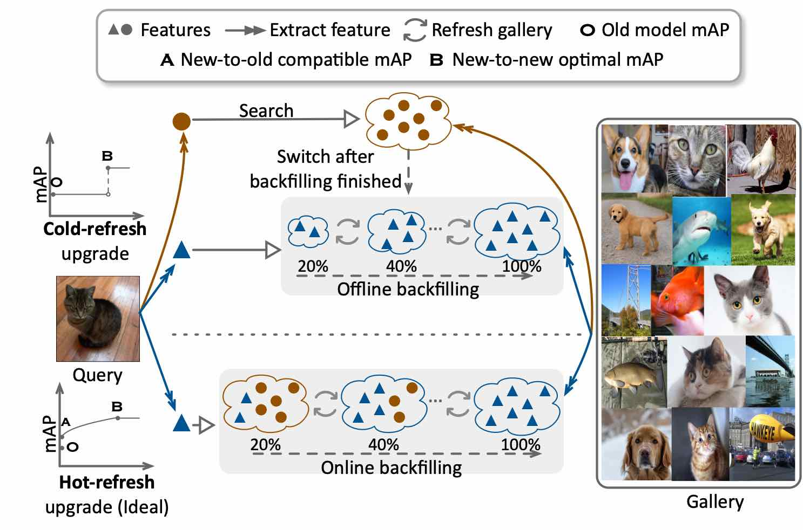

Zhang, Binjie (张斌杰)
Master Candidate, |
About me
Binjie (Benjamin) graduated from East China University of Science and Technology (ECUST) with dozens of honors. Now he is a Master student at Tsinghua University (THU), supervised by Prof. Chun Yuan. His research interests cover compatible representation learning and cross-modality video understanding. Besides, he closely cooperates with Dr. Yixiao Ge and Dr. Ying Shan at Tencent ARC Lab as an intern.
Research
My research interests include:
Compatible Representation Learning
Cross-Modality Video Understanding
Publications
B. Zhang, Y. Ge, Y. Shen, Y. Li, C. Yuan, X. Xu, Y. Wang, and Y. Shan. “Hot-Refresh Model Upgrades with Regression-Alleviating Compatible Training in Image Retrieval.” International Conference on Learning Representations (ICLR). 2022. (CCF-A) [pdf][code]
B. Zhang, Y. Ge, Y. Shen, S. Su, F. Wu, C. Yuan, X. Xu, Y. Wang, and Y. Shan. “Towards Universal Backward-Compatible Representation Learning.” The 31st International Joint Conference on Artificial Intelligence (IJCAI). 2022. (CCF-A) (long oral) [pdf][code]
Academic service
Reviewer
European Conference on Computer Vision 2022
Education
Master of Computer Science and Technology, Tsinghua University (THU), 2019-2022
Supervisor: Prof. Chun Yuan
Research Interests: Compatible Representation Learning; Cross-modality video understanding
Bachelor of Information Engineering, East China University of Science and Technology (ECUST), 2015-2019
Cumulative GPA: 3.77 / 4.00, Ranking: 1 / 92
Competitions and Awards
Annual College Personage Award (Highest student honor in ECUST), Mar, 2018
National Scholarship for Undergraduates (twice) (Ministry of Education of China), Nov 2017 & Nov 2016
Top Level Comprehensive Curriculum Scholarship (twice), Oct 2017 & Oct 2016
Arawana Scholarship (Arawana charity foundation of China sponsored), Oct 2017
Social Work Award & Outstanding Student & Excellent Class Cadres, Sep 2017 & Sep 2016
The Interdisciplinary Contest in Modeling (ICM) - Meritorious Winner (9%), Feb 2018
China Computer Programming and Design Competition (Championship), Aug 2016
Work Experience
Intern in Tencent ARC Lab, 2020 - Present
Work on compatible representation learning, supervised by Dr. Yixiao Ge and Dr. Yantao Shen.
Intern in Tencent ARC Lab, 2019 - 2020
Focus on cross-modality video understanding, supervised by Dr. Yu Li and Dr. Ying Shan.
Projects
Hot-Refresh Model Upgrades with Regression-Free Compatible Training in Image Retrieval.
Towards Universal Backward-Compatible Representation Learning.
|  | We for the first time study the model regression problem in hot-refresh model upgrades of image retrieval systems with compatible representation learning. In addition, we introduce a simple yet effective training regularization and a uncertainty based backfilling strategy to alleviate model regression. |
 |
Previous works of compatible learning only investigated a close-set training scenario, and were limited by more realistic and challenging open-set scenes. We first explore all possible compatible training settings, and further propose a universal backward-compatible training paradigm with a novel structural prototype refinement algorithm. |